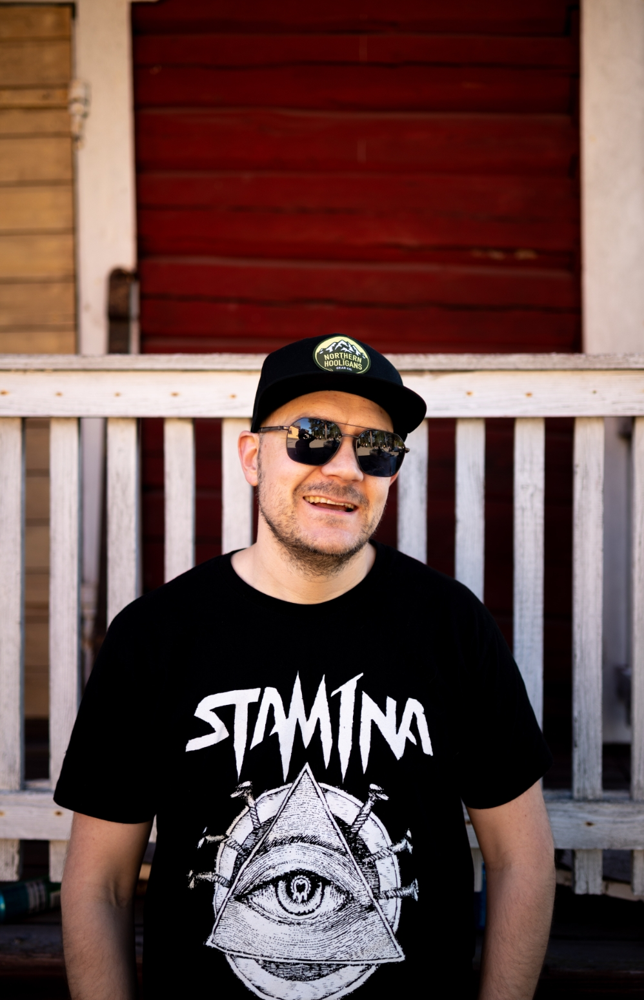

Petri
Kumpumäki
Kuvaus
Petri Kumpumäki Jyväskylästä. valmistunut tieto- ja viestintätekniikan, ohjelmistokehittäjän perustutkinnosta keväällä 2024. Syksy 2024 aloitin JAMK tieto- ja viestintätekniikan insinööritutkinnon, mikä on vielä meneillään.